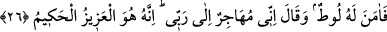
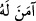
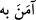

Taştan yapılmış put size kıble olup ona tapmaya başlayınca
Lânet ve körlük size gölgelik oldu
Sizin için Allah’tan hiçbir zaman yardım yoktur
Cennet ve rahmet size haram oldu
26. Bunun üzerine Lût ona îman etti ve (İbrahim): Doğrusu ben Rabbim’e hicret
ediyorum. Şüphesiz O, mutlak güç ve hikmet sâhibidir, dedi.
“Bunun üzerine Lût ona îman etti”
Lût (a.s.), İbrahim (a.s.)’ın kız ya da erkek kardeşinin oğludur.
Buradaki “__WORD__” ile “__WORD__ ifâdelerinin mânâları birbirine yakındır. Ancak “__WORD__
ifâdesinde farklı bir mânâ vardır. Şöyle ki, Lût (a.s.), İbrâhim (a.s.)’ın sadece
peygamberliğine ve dâvet ettiği tevhîde inanmakla kalmadı, aynı zamanda onun bütün
sözlerini de tasdik etti. Çünkü o, küfürden berî ve uzaktı. Onun hakkında: “Ateşin
İbrâhim (a.s.)’ı yakmadığını görünce îmân etti” şeklindeki rivâyetin, bu anlattıklarımıza
hamledilmesi gerekir. Ya da ayette “îmân” ile onun yüksek derecesi kasdedilmiş
olmalıdır ki, buna ancak himmet ehli olanlar erişebilir. Bu açıdan da Lût (a.s.) O’na
îmân edenlerin ilki idi.
İbrâhim (a.s.), Lût’a ve Sâre’ye: “Doğrusu ben” kavmimi bırakıp “Rabbim’e
(emrettiği yere) hicret ediyorum” dedi. Sâre; İbrâhim (a.s.)’ın amcasının kızı ve aynı
zamanda zevcesi idi. O da İbrâhim (a.s.)’a îmân etmişti.
“Muhâcir”, terk eden, göçüp giden demektir.
Hadiste buyrulmuştur ki: “Allah, ancak muhâcir olarak anılır, zikredilir.” Yani,
Allah’ı ancak, kalbi dilinden ayrılan, ona uymayan (Allah ile olan) O’nu zikreder,
demektir.
el-Müfredât’ta der ki: “Hecr” ve “hicrân”; insanın başkasını terk etmesi ve ondan
ayrılması anlamına gelir. Bu; ya bedenle ya dille ya da kalple olur.
Âriflerden biri demiştir ki: “Ben nefsimden ve varlıktan O’na dönüyorum.” O’na
dönmek; O’nun dışındaki şeylerden tamamıyla ayrılmakla olur. Bir kimsenin kâinattaki
herhangi bir şeyle ilgilendiği müddetçe O’na dönmesi sahih olmaz. Ne zaman ki varlık
âleminden tamamıyla ayrılır ve herhangi bir şeyle ilişiği kalmaz, o zaman Allah’a
dönmesinden söz edilebilir.
Kemal Hocendî der ki:
Kopmadıkça kavuşmak müyesser olmaz